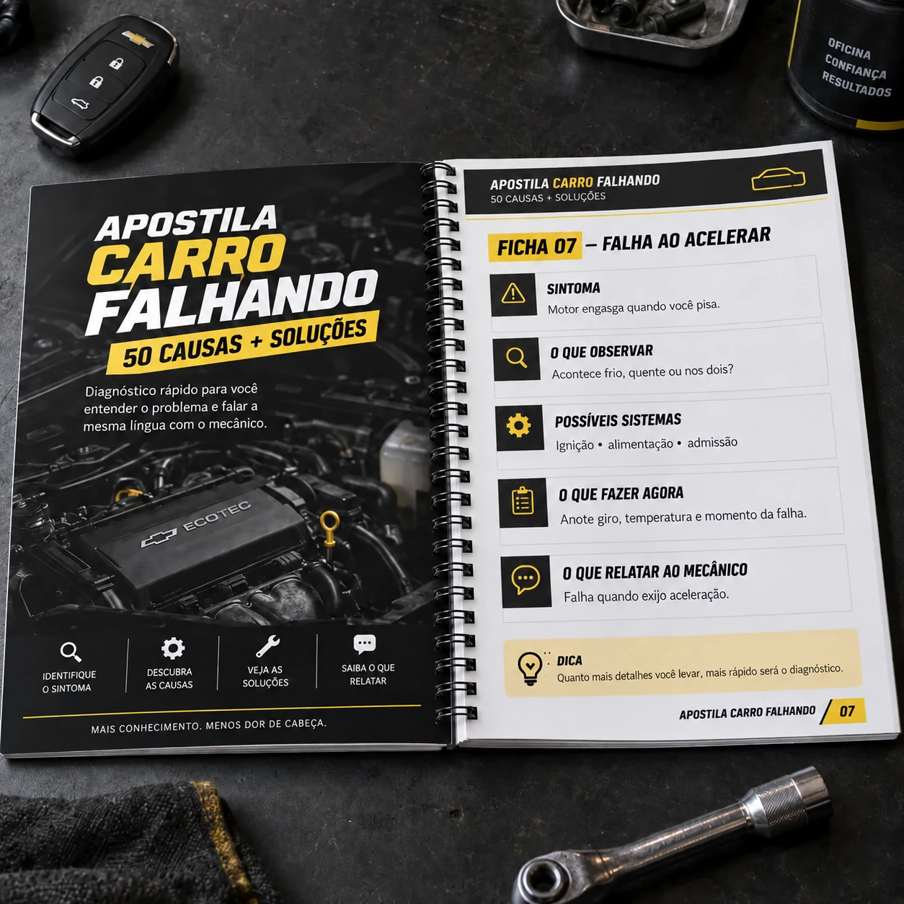

PACK PRÁTICO PARA MOTORISTAS
SEU CARRO ESTÁ FALHANDO?
Conheça as 50 causas mais comuns e o que fazer em cada situação antes de gastar dinheiro trocando peças no chute.
POR APENAS
QUERO ACESSAR AS 50 SOLUÇÕES
10R$
pagamento único
Acesso digital • Consulte direto pelo celular
ANTES DE GASTAR
VEJA A DIFERENÇA ENTRE IR NO CHUTE E CHEGAR PREPARADO
×
sem organizar os sintomas
Trocar por tentativa
- Por onde começar
- Qualquer peça parece suspeita
- Na oficina
- Você chega sem saber explicar a falha
- Risco
- Começar pela troca aleatória
- Clareza
- —
✓
observe antes de gastar
Usar o Pack primeiro
- Por onde começar
- Identifique o tipo de falha
- Na oficina
- Relate quando e como acontece
- Próximo passo
- Saiba quais sistemas merecem atenção
- Clareza
- Você chega mais preparado
Você não precisa adivinhar a peça. Precisa reconhecer as pistas que o carro já está mostrando.
QUERO ACESSAR O PACK
VEJA SE VOCÊ SE IDENTIFICA
SEU CARRO FAZ ALGUMA DESSAS COISAS?
Deslize e encontre o comportamento que está tirando sua paz.
↗
Engasga quando acelera
Você pisa e o motor demora, corta ou responde mal.
↯
Dá trancos
O carro sacode, principalmente ao sair ou retomar.
↓
Perde força
Parece amarrado e não desenvolve como antes.
⌁
Falha em subida
O defeito aparece quando o motor é mais exigido.
≋
Oscila parado
A marcha lenta sobe, desce ou ameaça morrer.
⟳
Demora para pegar
Precisa insistir na chave ou acelerar para ligar.
♨
Falha depois de quente
Funciona frio e começa a apresentar falha ao esquentar.
⛽
Falhou após abastecer
O comportamento mudou logo depois de colocar combustível.
!
Luz da injeção acendeu
A falha apareceu junto com o aviso no painel.
Se você reconheceu seu carro em uma dessas situações, o Pack foi feito exatamente para isso.
QUERO ENTENDER O QUE PODE SER
O PREJUÍZO COMEÇA QUANDO VOCÊ SAI TROCANDO PEÇA NO CHUTE
Sem entender os sinais, qualquer troca parece fazer sentido.
VELA→BOBINA→BICO→SENSOR→BOMBA→TBI
“Troca isso primeiro. Se não resolver, a gente tenta outra coisa.”
O Pack ajuda você a organizar as pistas antes de começar essa sequência. Não é para desconfiar de todo mecânico. É para chegar menos perdido e saber explicar exatamente quando e como a falha aparece.
QUERO EVITAR TROCAS NO CHUTE
CONSULTA RÁPIDA, SEM ENROLAÇÃO
VOCÊ NÃO PRECISA VIRAR MECÂNICO.
Só precisa saber o que observar antes de gastar.
O Pack Carro Falhando foi organizado por situações reais. Você não precisa estudar o material inteiro: procure o comportamento do seu carro, abra a ficha correspondente e veja quais sinais merecem atenção.
- Texto curto e linguagem simples
- Separado pelo tipo de falha
- Feito para consultar no celular
- Orientação prática para o próximo passo
50 fichas práticas para consultar
SIMPLES DE USAR
COMO FUNCIONA NA PRÁTICA
Identifique o sintoma
Exemplo: o carro falha quando você acelera.
Abra a solução correspondente
Veja possíveis sistemas relacionados e verificações simples.
Saiba o que observar
Explique melhor a falha na oficina e evite começar por trocas aleatórias.
VEJA O PRODUTO POR DENTRO
NÃO É UM E-BOOK CHEIO DE TEXTO.
São fichas diretas para consultar conforme o sintoma. Veja exemplos demonstrativos:
- SINTOMA
- Motor engasga ao pisar mais fundo.
- O QUE OBSERVAR
- Acontece frio, quente ou nos dois?
- POSSÍVEIS SISTEMAS
- Ignição, alimentação e admissão.
- O QUE FAZER AGORA
- Anote o giro, a carga e quando começou.
- O QUE RELATAR
- “Falha somente quando exijo aceleração.”
- SINTOMA
- Funciona frio e começa a cortar depois.
- O QUE OBSERVAR
- Tempo até falhar e temperatura no painel.
- POSSÍVEIS SISTEMAS
- Ignição, sensores e alimentação.
- QUANDO IR À OFICINA
- Se perde força, apaga ou há luz de alerta.
- O QUE RELATAR
- “A falha surge só depois que aquece.”
- SINTOMA
- Giro sobe e desce com o carro parado.
- O QUE OBSERVAR
- Com ar ligado? Motor frio? Luz acesa?
- POSSÍVEIS SISTEMAS
- Admissão, controle da lenta e sensores.
- O QUE FAZER AGORA
- Registre quando ocorre e evite ajustes no chute.
- O QUE RELATAR
- “O giro oscila parado, nestas condições...”
- SINTOMA
- Começou logo depois de colocar combustível.
- O QUE OBSERVAR
- Posto, combustível e quantidade colocada.
- POSSÍVEIS SISTEMAS
- Combustível, alimentação e gerenciamento.
- QUANDO IR À OFICINA
- Se piorar, apagar ou perder muita força.
- O QUE RELATAR
- “Começou imediatamente após abastecer.”
Exemplos demonstrativos da estrutura. O material orienta a interpretação inicial dos sintomas e não fornece diagnóstico definitivo.
QUERO VER AS 50 FICHAS
TUDO ORGANIZADO PARA CONSULTA
O QUE VOCÊ RECEBE
50
Causas + soluções
As situações mais comuns relacionadas a carro falhando, com orientação prática.
Mapa rápido dos sintomas
Encontre a ficha certa sem perder tempo.
Separação por tipo de falha
Aceleração, partida, lenta, motor frio ou quente.
Checklist pré-oficina
O que verificar e organizar antes de levar o carro.
Ficha para anotar a falha
Registre quando, como e em qual condição ela aparece.
Guia dos principais sistemas
Uma visão simples das áreas que podem merecer atenção.
3 SUPER BÔNUS INCLUSOS
GARANTA SEU ACESSO AGORA E RECEBA MAIS 3 MATERIAIS PRÁTICOS
Complementos feitos para você organizar as pistas e conversar com a oficina sem chegar completamente no escuro.
BÔNUS INCLUSO
Roteiro de perguntas para fazer na oficina
Uma lista direta para você perguntar o que foi testado, por que determinada peça virou suspeita e qual sinal levou àquela conclusão.
BÔNUS INCLUSO
Mapa de pistas pelo momento da falha
Compare rapidamente se o problema aparece com o motor frio, quente, parado ou sob aceleração e saiba o que vale registrar.
BÔNUS INCLUSO
Guia rápido da luz da injeção junto da falha
Veja quais informações anotar quando a luz aparece e quando o comportamento do carro indica que é hora de procurar avaliação profissional.
Os bônus ajudam na observação e na comunicação. Eles não substituem testes, diagnóstico ou reparo profissional.
QUERO O PACK + 3 BÔNUS
ACESSO IMEDIATO
TENHA AS 50 SOLUÇÕES NA PALMA DA MÃO
VOCÊ RECEBE
PACK CARRO FALHANDO
50 Causas + Soluções práticas
- ✓ Pack com 50 causas + soluções
- ✓ 3 bônus práticos inclusos
- ✓ Pagamento único
- ✓ Acesso digital
- ✓ Acesso após confirmação do pagamento
- ✓ Funciona no celular, tablet e computador
DE R$ 47,00 POR APENAS
QUERO AS 50 SOLUÇÕES
R$10,00
79% OFF
COMPRA 100% SEGURAVocê será direcionado para o ambiente seguro de pagamento.
GARANTIA DE 7 DIAS
ACESSE O MATERIAL E VEJA SE ELE FAZ SENTIDO PARA VOCÊ
Você tem 7 dias após a compra para solicitar o reembolso, seguindo as orientações informadas no checkout. Assim, pode conhecer o Pack com mais tranquilidade.
QUERO ACESSAR SEM RISCO
TIRE SUAS DÚVIDAS
PERGUNTAS FREQUENTES
Preciso entender de mecânica?+
Não. O Pack foi feito para motorista comum, com linguagem direta e sem termos complicados. A ideia é ajudar você a observar os sinais, não transformar você em mecânico.
Serve para qualquer carro?+
O material reúne situações comuns em carros de diferentes marcas e idades. Cada veículo tem suas particularidades, então as fichas funcionam como orientação inicial, não como diagnóstico específico do seu modelo.
O material substitui um mecânico?+
Não. Ele ajuda você a entender e relatar melhor os sintomas, fazer verificações simples e chegar mais preparado à oficina. Reparos e diagnósticos técnicos devem ser feitos por profissional qualificado.
Vou descobrir exatamente qual peça está ruim?+
Não existe como garantir isso apenas pelo sintoma. O Pack mostra causas comuns, sistemas que podem estar relacionados e o que observar. A confirmação pode exigir avaliação e testes profissionais.
Como recebo o Pack?+
O acesso é digital. Depois da confirmação do pagamento, você recebe as orientações de acesso informadas no checkout.
O acesso é imediato?+
O acesso é liberado após a confirmação do pagamento. Em pagamentos instantâneos, isso normalmente acontece em pouco tempo.
Posso acessar pelo celular?+
Sim. O material foi pensado principalmente para consulta pelo celular, mas também pode ser acessado em tablet ou computador.